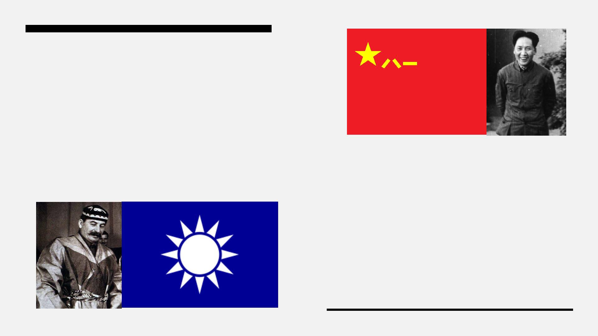

Civil War
In what became known as the War Lord
period, regional factions continued to
battle for power. Eventually, a
Communist supported Kuomintang
(KMT) had been clear to be the de-
facto leading power, but Civil War
would break out after the KMT betrayed
the Communists, massacring them in
theWhiteTerror.
In 1911, after growing rebellion movements,
the Qing Dynasty had fallen, leaving behind a
Chinese Republic that was not to last. With a
President Yuan Shikai continuing to increase
his personal power, reaching the point to
crowning himself Emperor, the Republic fell
into war.